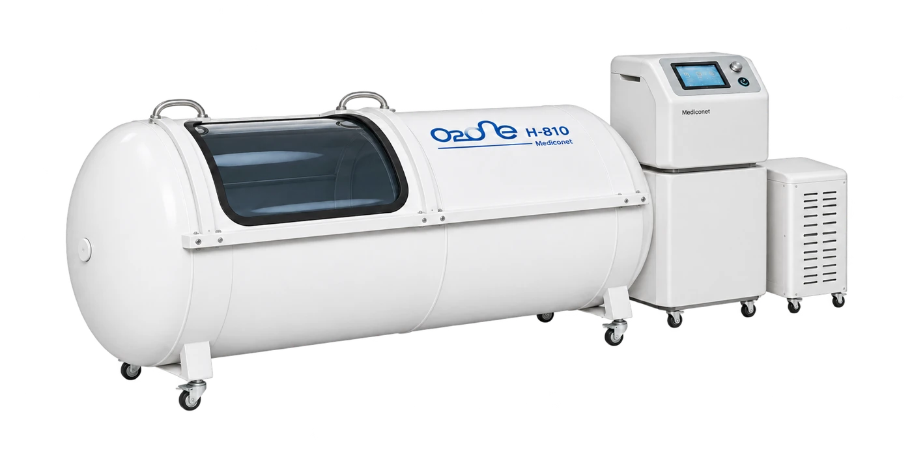

Гипербарическая оксигенация (барокамера)

Стоимость
- Сеанс30 мин
- 3 500 ₽
- Сеанс45–60 мин
- 4 500 ₽
- Сеанс90 мин
- 5 100 ₽
- Рабочее давление
- 1,3 атм.На 30% выше стандартного атмосферного
- Продолжительность
- 30–90 мин30, 45–60 или 90 минут
- Формат процедуры
- ИндивидуальныйВ положении лёжа
- Контроль процедуры
- Двусторонняя связьСо специалистом на протяжении сеанса
Суть метода
Барокамера — это кислородная процедура, которая проводится в условиях повышенного атмосферного давления.
Кислород необходим каждой клетке нашего организма для выработки энергии. В условиях повышенного давления увеличивается его способность растворяться в плазме крови, создавая дополнительные возможности для снабжения тканей кислородом.
Во время процедуры вы комфортно располагаетесь в индивидуальной камере, отдыхаете и спокойно дышите. Сеанс проходит под контролем специалиста.
Для чего применяется
Дополнительное снабжение тканей кислородом
В обычных условиях основную часть кислорода переносит гемоглобин — белок, содержащийся в эритроцитах. У здорового человека он, как правило, уже почти полностью насыщен кислородом. Поэтому простое увеличение количества вдыхаемого кислорода имеет ограниченное влияние на его перенос гемоглобином.
Однако существует и другой механизм: часть кислорода растворяется непосредственно в жидкой составляющей крови — плазме. При повышении давления кислорода во вдыхаемой смеси его растворимость в плазме увеличивается.
Именно этот принцип лежит в основе гипербарических кислородных технологий. Растворённый кислород участвует в общем процессе снабжения тканей наряду с кислородом, который переносится эритроцитами.
Кислород и клеточный обмен
Клетки используют кислород в процессе образования энергии, необходимой для работы мышц, нервной системы, внутренних органов, синтеза белков и восстановления тканей.
Особую роль кислород играет там, где его поступление ограничено: при нарушенном кровоснабжении, повреждении тканей или повышенной потребности в кислороде. В таких ситуациях возможности дополнительной доставки кислорода имеют медицинское значение.
Важно понимать: у здорового человека большее поступление кислорода не означает автоматического увеличения выработки энергии. Клеточный обмен регулируется потребностями самого организма.
Восстановительная медицина и регенерация тканей
Гипербарическая оксигенация нашла применение в восстановительной медицине благодаря способности увеличивать доступность кислорода для тканей. При определённых медицинских показаниях классическая ГБО используется в комплексном лечении трудно заживающих ран, лучевых повреждений тканей, а также для поддержки жизнеспособности отдельных проблемных кожных лоскутов и трансплантатов.
Эти применения основаны на специальных лечебных протоколах и назначаются врачом. Они не означают, что любой сеанс при повышенном давлении обеспечивает такой же лечебный эффект.
Место процедуры в превентивной медицине
В нашей клинике используется мягкий режим повышенного давления. Это возможность познакомиться с кислородной процедурой в спокойной, контролируемой среде и включить её в индивидуальную программу восстановления по рекомендации специалиста.
Процедуру можно рассматривать в контексте отдыха после интенсивных физических или эмоциональных нагрузок, а также как один из компонентов комплексной восстановительной программы. При этом её физиологическая особенность — изменение условий поступления кислорода — не должна подменяться обещаниями гарантированного прилива энергии, улучшения спортивных результатов или профилактики конкретных заболеваний.
Какое значение имеет повышенное давление?
По умолчанию в нашей камере установлено 1,3 атм. По документации Mediconet диапазон настройки модели составляет от 1,1 до 1,5 атм.
Давление влияет на то, какое количество кислорода может раствориться в крови. Чем выше давление самого кислорода во вдыхаемой смеси, тем больше кислорода при прочих равных может перейти в растворённое состояние.
Эффект зависит одновременно от двух параметров: общего давления в камере и концентрации кислорода в дыхательной смеси. Поэтому режим 1,3 атм. нельзя напрямую сравнивать с классическими лечебными сеансами при значительно более высоком давлении.
Как проходит процедура
Гость удобно располагается лёжа в одноместной кислородной камере O2one-H810. Камера оснащена широким смотровым окном, через которое можно видеть окружающее пространство и сотрудника клиники.
Перед началом специалист знакомит гостя с внутренней панелью управления, системой двусторонней связи и порядком завершения сеанса.
Давление плавно повышается до установленного значения и поддерживается в течение основной части процедуры. В это время гость спокойно дышит и отдыхает. Перед завершением сеанса давление постепенно возвращается к исходному атмосферному уровню.
При повышении или снижении давления возможно ощущение заложенности ушей, знакомое многим по взлёту и посадке самолёта. Обычно помогают спокойные глотательные движения или зевание. При боли, выраженном дискомфорте или невозможности выровнять давление необходимо сразу сообщить об этом сотруднику.
Продолжительность и подготовка
В прайсе клиники предусмотрены сеансы продолжительностью 30, 45–60 и 90 минут. Подходящий режим и необходимость повторных посещений определяются индивидуально с учётом состояния здоровья, цели процедуры и переносимости.
Особой подготовки, как правило, не требуется. Перед посещением необходимо соблюдать следующие правила:
- уточнить у сотрудника требования к одежде, косметике и другим средствам личного ухода;
- оставить телефон, часы, электронные устройства и другие запрещённые предметы за пределами камеры;
- сообщить специалисту о хронических заболеваниях, принимаемых препаратах, недавно перенесённых операциях и текущем недомогании;
- при насморке, боли или заложенности ушей заранее предупредить сотрудника;
- при страхе замкнутых пространств обсудить возможность проведения процедуры и предварительно познакомиться с устройством камеры.
Показания и ограничения
Когда процедура может быть включена в программу
Кислородная процедура при повышенном давлении может рассматриваться специалистом как компонент индивидуальной восстановительной программы. При медицинских показаниях выбор оборудования и режима зависит от диагноза и цели лечения.
Администратор знакомит гостя с возможностями процедуры, но не назначает лечение, курс или продолжительность по конкретному заболеванию.
Противопоказания и состояния, требующие оценки специалиста
Неустранённый пневмоторакс (скопление воздуха в плевральной полости) является общепринятым абсолютным противопоказанием к гипербарическому воздействию.
Процедуру также не проводят при противопоказаниях, установленных руководством по эксплуатации конкретной модели, в том числе при некорригированной гипогликемии, эпилепсии без противосудорожной терапии, баротравме уха, непроходимости слуховых труб и клаустрофобии. При подозрении на декомпрессионную болезнь требуется специализированная медицинская помощь, а не сеанс в нашей камере.
Предварительная медицинская оценка особенно необходима при:
- насморке, симптомах острой инфекции, повышенной температуре, заложенности носа или ушей;
- заболеваниях лёгких, перенесённом пневмотораксе и недавних операциях на грудной клетке;
- заболеваниях уха, околоносовых пазух и недавних операциях в этих областях;
- судорожных приступах, сахарном диабете, беременности;
- серьёзных сердечно-сосудистых заболеваниях или текущем ухудшении самочувствия;
- приёме препаратов, которые могут влиять на безопасность гипербарического воздействия.
Перечень не является исчерпывающим. Решение о возможности проведения процедуры принимается медицинским специалистом с учётом инструкции оборудования и состояния гостя.
История метода
Развитие гипербарической медицины тесно связано с изучением влияния атмосферного давления на организм человека. Первые камеры для воздействия повышенным давлением появились задолго до современных кислородных технологий.
В XX веке исследования в области физиологии дыхания, водолазной медицины и хирургии позволили сформировать научные основы применения кислорода под давлением. Важным этапом стали работы нидерландского хирурга Ите Бурема в 1950–1960-х годах, продемонстрировавшие физиологическое значение кислорода, растворённого непосредственно в плазме крови.
Сегодня наряду с классическими медицинскими барокамерами существуют установки для мягкого гипербарического воздействия. Они отличаются рабочим давлением, способом подачи кислорода и областями применения.
Частые вопросы
Зачем мне барокамера, если я приехал в горы и могу просто подышать свежим воздухом среди сосен?
Прогулки по горному лесу — прекрасная часть оздоровительного отдыха: свежий воздух, движение, контакт с природой и возможность отвлечься от повседневных забот. Барокамера не заменяет прогулки, а использует совершенно другой физический принцип.
В горном воздухе доля кислорода остаётся примерно такой же, как на равнине, — около 21%. Но с увеличением высоты атмосферное давление снижается, а вместе с ним уменьшается и давление кислорода, которое способствует его переходу из лёгких в кровь.
В барокамере происходит обратное: давление искусственно повышается. В сочетании с подачей кислорода это создаёт особые условия для его растворения в плазме крови.
Таким образом, польза прогулок и принцип действия барокамеры различны. Они не конкурируют друг с другом, а могут занимать своё место в общей программе отдыха и восстановления.
Чем барокамера отличается от обычной кислородной ингаляции?
При обычной ингаляции меняется концентрация кислорода во вдыхаемой смеси, а атмосферное давление остаётся прежним. В барокамере к этому добавляется повышенное давление. Оба фактора влияют на количество кислорода, которое может раствориться в крови.
Может ли барокамера помочь восстановлению после физических нагрузок?
Сеанс проходит в состоянии покоя и может быть включён в индивидуальную программу восстановления. Кислород необходим мышцам для клеточного обмена, однако выраженное ускорение восстановления и повышение физической выносливости именно при режиме 1,3 атм. пока не установлены достаточно убедительно.
Можно ли использовать барокамеру после операции?
В медицинской практике существуют специальные протоколы ГБО при отдельных осложнениях заживления, в том числе при угрозе жизнеспособности кожных лоскутов. Но сама по себе перенесённая операция не является основанием для посещения любой барокамеры. Возможность сеанса и подходящий режим согласуются с лечащим врачом.
Что я буду чувствовать во время сеанса?
Обычно процедура проходит спокойно. Наиболее заметное ощущение связано с изменением давления в ушах. Само увеличение количества растворённого кислорода человек непосредственно не ощущает.
Можно ли связаться со специалистом и выйти раньше?
Да. В нашей барокамере предусмотрены двусторонняя связь и кнопка остановки на внутренней панели. Если появляется боль, тревога или другое неприятное ощущение, необходимо сразу сообщить сотруднику. При необходимости сеанс прекращают. Дверь камеры открывают после возвращения давления к атмосферному уровню.
Чем отличаются сеансы на 30, 45–60 и 90 минут?
Это предусмотренные прайсом варианты продолжительности процедуры. Подходящее время определяется специалистом индивидуально. Более длительный сеанс не обязательно означает более выраженный оздоровительный эффект.
Научное обоснование
Кислородная камера O2one-H810
В основе процедуры лежит хорошо изученный физический принцип: при увеличении давления кислорода возрастает его растворимость в жидкостях организма. Классическая гипербарическая медицина использует этот механизм в специальных лечебных протоколах.
Установленная в нашей клинике камера O2one-H810 относится к оборудованию для мягкого гипербарического воздействия. Физиологические реакции на близкие режимы изучаются в научных исследованиях, в том числе с участием здоровых добровольцев.
Научные исследования и источники
Руководство по эксплуатации именно O2one-H810
Руководство производителя Mediconet описывает модель как одноместную кислородную камеру для нормоксической лечебной компрессии. Предусмотрены регулировка давления, поступления кислорода, система связи и кислородный концентратор. В технических характеристиках указан диапазон давления 1,1–1,5 атмосферы. Это подтверждает принадлежность оборудования к низкодавленческим гипербарическим установкам.
Российское регистрационное удостоверение: РЗН 2015/2497. Регистрационное назначение изделия не следует считать доказательством эффективности каждого перечисленного клинического применения именно при режиме 1,3 ATA.
- Руководство по эксплуатации O2one-H750 и O2one-H810 — разделы 1, 2 и 3.
- Сведения о регистрационном удостоверении РЗН 2015/2497.
Физический механизм: закон Генри
ATA означает абсолютные атмосферы. Абсолютное давление учитывает атмосферное давление, поэтому при 1,3 ATA давление в камере примерно на 30% выше стандартного атмосферного.
При прочих равных количество газа, растворённого в жидкости, пропорционально его парциальному давлению. В случае кислорода в крови речь идёт о физически растворённой фракции, а не о кислороде, связанном с гемоглобином.
Парциальное давление кислорода зависит от общего давления и доли кислорода во вдыхаемой смеси. Если доля кислорода не меняется, повышение абсолютного давления с 1 до 1,3 ATA увеличивает его парциальное давление в сухой газовой смеси примерно на 30%. Реальное изменение количества кислорода в плазме зависит также от состава дыхательной смеси, лёгочного газообмена и индивидуальной физиологии. Без измерения или подтверждения фактической концентрации кислорода нельзя достоверно назвать кратность роста для нашей установки.
2022 — Сердечно-сосудистая реакция на режим 1,3 ATA
Takemura A. и соавторы исследовали десять здоровых взрослых при давлении 1,3 ATA и концентрации кислорода приблизительно 30%. В сравнении с обычными атмосферными условиями зарегистрированы изменения артериального давления. Работа подтверждает физиологическую активность мягкого гипербарического воздействия, но не доказывает лечебного или общеоздоровительного эффекта и не подтверждает идентичность режима с O2one-H810.
Оригинальная публикация: Exposure to a mild hyperbaric oxygen environment elevates blood pressure.
2025 — Физическая выносливость при 1,3 ATA
В исследовании однократного 60-минутного воздействия при 1,3 ATA и дыхании 100%-м кислородом у здоровых молодых мужчин не выявлено значимого улучшения максимального потребления кислорода и времени выполнения нагрузочного теста до утомления. Отдельные физиологические параметры изменялись, но работа не подтверждает обещание немедленного роста аэробной выносливости. Концентрация кислорода в исследовании также не должна автоматически приписываться нашей камере.
Международные стандарты: отличие от классической ГБО
Европейский кодекс надлежащей практики гипербарической оксигенации устанавливает критерий парциального давления кислорода свыше 1,5 ATA в течение не менее 60 минут на рабочем режиме. Американское общество подводной и гипербарической медицины (UHMS) в актуальном определении клинической ГБО указывает давление не менее 2 ATA и применение медицинского кислорода.
Следовательно, доказательства эффективности классических лечебных протоколов нельзя автоматически переносить на мягкое воздействие при 1,3 ATA.
- A European code of good practice for hyperbaric oxygen therapy — Review 2022.
- UHMS — Clinical indications and definition of hyperbaric oxygen therapy.
- 2026 — Hyperbaric Oxygen Therapy and Mild Hyperbaric Oxygen Therapy Are Not Synonymous: A Narrative Review.
Вывод
Механизм увеличения растворимости кислорода при повышении его парциального давления научно обоснован. Исследования мягкой гипербарической экспозиции показывают отдельные физиологические реакции, однако доказательства длительной клинической пользы для здоровых людей ограничены. Независимых исследований, подтверждающих конкретные оздоровительные результаты непосредственно для O2one-H810 при локальном режиме клиники, в рамках подготовки этой карточки не установлено.